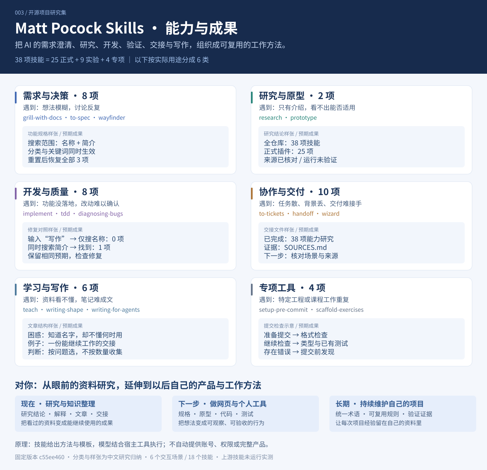

把“看过”变成有依据的判断
核对能力、限制和具体版本，让后续选型不只依赖仓库首页的一句介绍。
你会留下有来源、有版本、有未验证范围的研究文档。
MATT POCOCK SKILLS / CAPABILITY SUMMARY
从需求与研究，到原型、代码、验证、交接和写作。38 项技能，按自己的任务选择。

TYPES → OUTCOMES
以下按实际用途归纳，覆盖全部 38 项。上游目录为工程 18、通用 7、实验 9、专项 4；正式插件包含前两类共 25 项。
WHEN IT MATTERS TO YOU
当前先用于研究、理解与沉淀。任务发展到制作和维护工具时，再增加工程流程。
本页已实际构造并检查筛选原型、故障规则对照和学习反馈；未安装或执行上游技能，未测量效率提升。
这个库整体偏软件工程与协作。如果你主要做研究、阅读和内容整理，先看“研究、分享、交接、学习”；需要做网页或修问题时，再看开发相关场景。
技能把注意事项、步骤、参考材料和交付格式写成指令，模型再结合你的输入与现有工具执行。例如 research 强调核对来源，handoff 强调接手所需信息。模型本来也可能做到这些；技能的价值在于复用一套做法，实际质量仍需核验。
下面的过程由研究者整理，按钮用于阅读样张或操作小样本，不会在后台执行上游技能。你可以只取其中一个步骤，不必采用整套流程。
先读一句话能力，再看它具体交付什么。
试试更短的关键词，或清除当前类别与状态限制。
KNOW THE DIFFERENCE
用“最终得到什么”来区分，避免把澄清当成规格、把原型当成产品。
FOR YOUR RESEARCH WORK
结合你正在维护的 GitHub 项目研究集，最直接的价值落在以下四件事。
核对能力、限制和具体版本，让后续选型不只依赖仓库首页的一句介绍。
区分文档研究完成、运行已经验证、应用已经部署，防止不同状态被混为一谈。
把研究目录的展示与交互做成可操作样本，真实比较哪一种更方便查阅。
把已核对的结论、证据位置和剩余问题交接清楚，减少重复整理背景。
研究、规格、测试和交接都有具体产物；是否减少返工、节省时间，还需要用真实任务比较。当前文档研究不包含效率提升的实测数据。